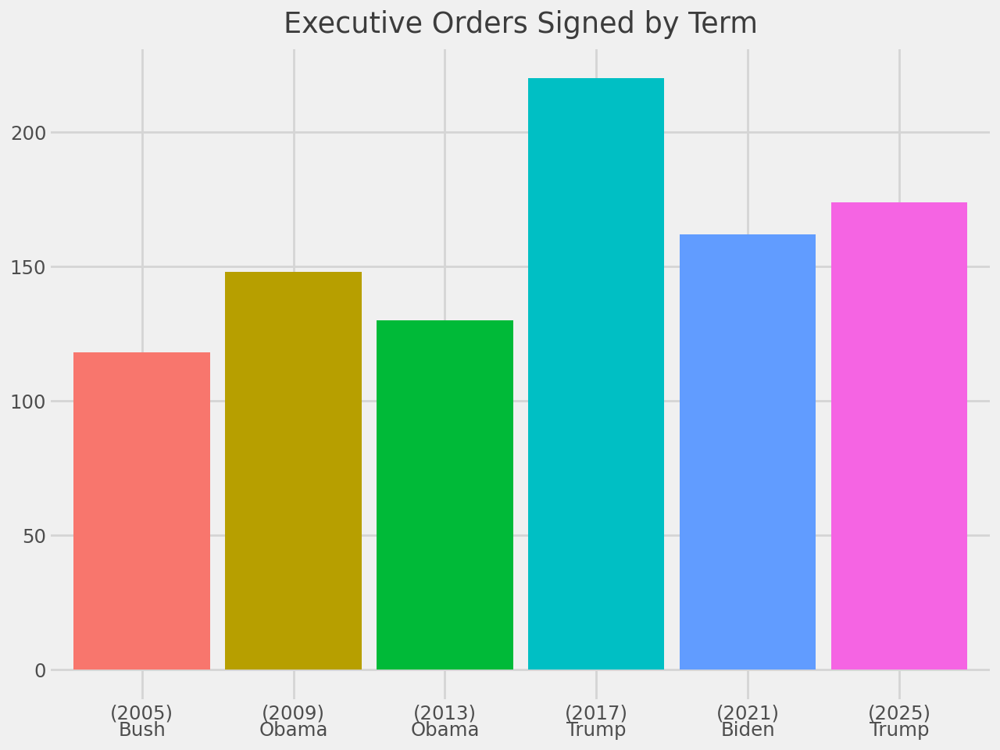
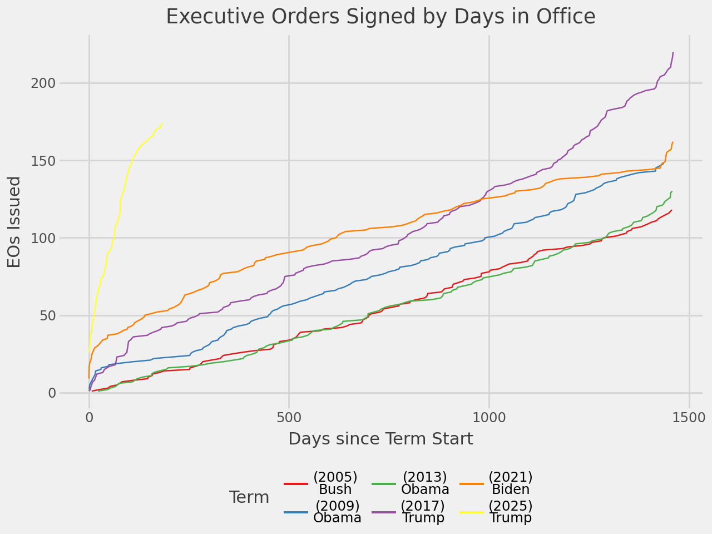

import requests
import polars as pl
import polars.selectors as cs
from plotnine import *
from great_tables import *In [1]:
Data Retrieval
In [2]:
res = []
url = 'https://www.federalregister.gov/api/v1/documents.json?fields[]=document_number&fields[]=excerpts&fields[]=page_length&fields[]=president&fields[]=publication_date&fields[]=raw_text_url&fields[]=signing_date&fields[]=title&fields[]=toc_subject&fields[]=topics&per_page=20&conditions[publication_date][gte]=2005-01-20&conditions[presidential_document_type][]=executive_order&conditions[president][]=george-w-bush&conditions[president][]=barack-obama&conditions[president][]=donald-trump&conditions[president][]=joe-biden&conditions[president][]=donald-trump'
while url != '':
# retrieve results
response = requests.get(url)
response.raise_for_status()
res_temp = response.json()
res += [res_temp]
# get next url
url = res_temp.get('next_page_url','')Data Cleaning
In [3]:
df_res = (
pl.DataFrame(res)
.select('results')
.explode('results')
.unnest('results')
.unnest('president')
)
df_res.glimpse()Rows: 969
Columns: 11
$ document_number <str> '2025-14212', '2025-14217', '2025-14218', '2025-13925', '2025-12961', '2025-12962', '2025-12774', '2025-12775', '2025-12505', '2025-12506'
$ excerpts <null> None, None, None, None, None, None, None, None, None, None
$ page_length <i64> 4, 3, 3, 3, 2, 2, 3, 2, 1, 5
$ identifier <str> 'donald-trump', 'donald-trump', 'donald-trump', 'donald-trump', 'donald-trump', 'donald-trump', 'donald-trump', 'donald-trump', 'donald-trump', 'donald-trump'
$ name <str> 'Donald Trump', 'Donald Trump', 'Donald Trump', 'Donald Trump', 'Donald Trump', 'Donald Trump', 'Donald Trump', 'Donald Trump', 'Donald Trump', 'Donald Trump'
$ publication_date <str> '2025-07-28', '2025-07-28', '2025-07-28', '2025-07-23', '2025-07-10', '2025-07-10', '2025-07-09', '2025-07-09', '2025-07-03', '2025-07-03'
$ raw_text_url <str> 'https://www.federalregister.gov/documents/full_text/text/2025/07/28/2025-14212.txt', 'https://www.federalregister.gov/documents/full_text/text/2025/07/28/2025-14217.txt', 'https://www.federalregister.gov/documents/full_text/text/2025/07/28/2025-14218.txt', 'https://www.federalregister.gov/documents/full_text/text/2025/07/23/2025-13925.txt', 'https://www.federalregister.gov/documents/full_text/text/2025/07/10/2025-12961.txt', 'https://www.federalregister.gov/documents/full_text/text/2025/07/10/2025-12962.txt', 'https://www.federalregister.gov/documents/full_text/text/2025/07/09/2025-12774.txt', 'https://www.federalregister.gov/documents/full_text/text/2025/07/09/2025-12775.txt', 'https://www.federalregister.gov/documents/full_text/text/2025/07/03/2025-12505.txt', 'https://www.federalregister.gov/documents/full_text/text/2025/07/03/2025-12506.txt'
$ signing_date <str> '2025-07-23', '2025-07-23', '2025-07-23', '2025-07-17', '2025-07-07', '2025-07-07', '2025-07-03', '2025-07-03', '2025-06-30', '2025-06-30'
$ title <str> 'Accelerating Federal Permitting of Data Center Infrastructure', 'Preventing Woke AI in the Federal Government', 'Promoting the Export of the American AI Technology Stack', 'Creating Schedule G in the Excepted Service', 'Ending Market Distorting Subsidies for Unreliable, Foreign-Controlled Energy Sources', 'Extending the Modification of the Reciprocal Tariff Rates', "Establishing the President's Make America Beautiful Again Commission", 'Making America Beautiful Again by Improving Our National Parks', 'Establishing a White House Office for Special Peace Missions', 'Providing for the Revocation of Syria Sanctions'
$ toc_subject <str> None, 'Government Agencies and Employees', None, 'Government Agencies and Employees', None, None, None, None, None, None
$ topics <list[null]> [], [], [], [], [], [], [], [], [], []
Rows: 969
Columns: 11
$ document_number <str> '2025-14212', '2025-14217', '2025-14218', '2025-13925', '2025-12961', '2025-12962', '2025-12774', '2025-12775', '2025-12505', '2025-12506'
$ excerpts <null> None, None, None, None, None, None, None, None, None, None
$ page_length <i64> 4, 3, 3, 3, 2, 2, 3, 2, 1, 5
$ identifier <str> 'donald-trump', 'donald-trump', 'donald-trump', 'donald-trump', 'donald-trump', 'donald-trump', 'donald-trump', 'donald-trump', 'donald-trump', 'donald-trump'
$ name <str> 'Donald Trump', 'Donald Trump', 'Donald Trump', 'Donald Trump', 'Donald Trump', 'Donald Trump', 'Donald Trump', 'Donald Trump', 'Donald Trump', 'Donald Trump'
$ publication_date <str> '2025-07-28', '2025-07-28', '2025-07-28', '2025-07-23', '2025-07-10', '2025-07-10', '2025-07-09', '2025-07-09', '2025-07-03', '2025-07-03'
$ raw_text_url <str> 'https://www.federalregister.gov/documents/full_text/text/2025/07/28/2025-14212.txt', 'https://www.federalregister.gov/documents/full_text/text/2025/07/28/2025-14217.txt', 'https://www.federalregister.gov/documents/full_text/text/2025/07/28/2025-14218.txt', 'https://www.federalregister.gov/documents/full_text/text/2025/07/23/2025-13925.txt', 'https://www.federalregister.gov/documents/full_text/text/2025/07/10/2025-12961.txt', 'https://www.federalregister.gov/documents/full_text/text/2025/07/10/2025-12962.txt', 'https://www.federalregister.gov/documents/full_text/text/2025/07/09/2025-12774.txt', 'https://www.federalregister.gov/documents/full_text/text/2025/07/09/2025-12775.txt', 'https://www.federalregister.gov/documents/full_text/text/2025/07/03/2025-12505.txt', 'https://www.federalregister.gov/documents/full_text/text/2025/07/03/2025-12506.txt'
$ signing_date <str> '2025-07-23', '2025-07-23', '2025-07-23', '2025-07-17', '2025-07-07', '2025-07-07', '2025-07-03', '2025-07-03', '2025-06-30', '2025-06-30'
$ title <str> 'Accelerating Federal Permitting of Data Center Infrastructure', 'Preventing Woke AI in the Federal Government', 'Promoting the Export of the American AI Technology Stack', 'Creating Schedule G in the Excepted Service', 'Ending Market Distorting Subsidies for Unreliable, Foreign-Controlled Energy Sources', 'Extending the Modification of the Reciprocal Tariff Rates', "Establishing the President's Make America Beautiful Again Commission", 'Making America Beautiful Again by Improving Our National Parks', 'Establishing a White House Office for Special Peace Missions', 'Providing for the Revocation of Syria Sanctions'
$ toc_subject <str> None, 'Government Agencies and Employees', None, 'Government Agencies and Employees', None, None, None, None, None, None
$ topics <list[null]> [], [], [], [], [], [], [], [], [], []
In [4]:
# lookup table
term = [1,2,1,2,1,1,2]
start_year = [2001, 2005, 2009, 2013, 2017, 2021, 2025]
start_date = [f'{year}-01-20' for year in start_year]
end_date = start_date[1:] + ['2029-01-20']
president_lname = ['Bush']*2 + ['Obama']*2 + ['Trump'] + ['Biden'] + ['Trump']
df_lkup = pl.DataFrame([term, start_year, start_date, end_date, president_lname],
schema = ['term','start_year','start_date', 'end_date', 'president_lname'],
orient = 'col')
df_lkup
shape: (7, 5)
| term | start_year | start_date | end_date | president_lname |
|---|---|---|---|---|
| i64 | i64 | str | str | str |
| 1 | 2001 | "2001-01-20" | "2005-01-20" | "Bush" |
| 2 | 2005 | "2005-01-20" | "2009-01-20" | "Bush" |
| 1 | 2009 | "2009-01-20" | "2013-01-20" | "Obama" |
| 2 | 2013 | "2013-01-20" | "2017-01-20" | "Obama" |
| 1 | 2017 | "2017-01-20" | "2021-01-20" | "Trump" |
| 1 | 2021 | "2021-01-20" | "2025-01-20" | "Biden" |
| 2 | 2025 | "2025-01-20" | "2029-01-20" | "Trump" |
In [5]:
df_clean = (
df_res
.with_columns(
president_lname = pl.col('identifier')
.str.extract('[A-Za-z ]+-([A-Za-z]+$)', group_index = 1)
.str.to_titlecase(),
)
# there's a bug in polars join_asof() at the time of writing...
.join(df_lkup, on = 'president_lname')
.filter( pl.col('signing_date') >= pl.col('start_date'))
.filter( pl.col('signing_date') < pl.col('end_date'))
.with_columns( pres_term = pl.concat_str( pl.col('president_lname'), pl.lit(' - '), pl.col('term')) )
)
df_clean.glimpse()Rows: 952
Columns: 17
$ document_number <str> '2025-14212', '2025-14217', '2025-14218', '2025-13925', '2025-12961', '2025-12962', '2025-12774', '2025-12775', '2025-12505', '2025-12506'
$ excerpts <null> None, None, None, None, None, None, None, None, None, None
$ page_length <i64> 4, 3, 3, 3, 2, 2, 3, 2, 1, 5
$ identifier <str> 'donald-trump', 'donald-trump', 'donald-trump', 'donald-trump', 'donald-trump', 'donald-trump', 'donald-trump', 'donald-trump', 'donald-trump', 'donald-trump'
$ name <str> 'Donald Trump', 'Donald Trump', 'Donald Trump', 'Donald Trump', 'Donald Trump', 'Donald Trump', 'Donald Trump', 'Donald Trump', 'Donald Trump', 'Donald Trump'
$ publication_date <str> '2025-07-28', '2025-07-28', '2025-07-28', '2025-07-23', '2025-07-10', '2025-07-10', '2025-07-09', '2025-07-09', '2025-07-03', '2025-07-03'
$ raw_text_url <str> 'https://www.federalregister.gov/documents/full_text/text/2025/07/28/2025-14212.txt', 'https://www.federalregister.gov/documents/full_text/text/2025/07/28/2025-14217.txt', 'https://www.federalregister.gov/documents/full_text/text/2025/07/28/2025-14218.txt', 'https://www.federalregister.gov/documents/full_text/text/2025/07/23/2025-13925.txt', 'https://www.federalregister.gov/documents/full_text/text/2025/07/10/2025-12961.txt', 'https://www.federalregister.gov/documents/full_text/text/2025/07/10/2025-12962.txt', 'https://www.federalregister.gov/documents/full_text/text/2025/07/09/2025-12774.txt', 'https://www.federalregister.gov/documents/full_text/text/2025/07/09/2025-12775.txt', 'https://www.federalregister.gov/documents/full_text/text/2025/07/03/2025-12505.txt', 'https://www.federalregister.gov/documents/full_text/text/2025/07/03/2025-12506.txt'
$ signing_date <str> '2025-07-23', '2025-07-23', '2025-07-23', '2025-07-17', '2025-07-07', '2025-07-07', '2025-07-03', '2025-07-03', '2025-06-30', '2025-06-30'
$ title <str> 'Accelerating Federal Permitting of Data Center Infrastructure', 'Preventing Woke AI in the Federal Government', 'Promoting the Export of the American AI Technology Stack', 'Creating Schedule G in the Excepted Service', 'Ending Market Distorting Subsidies for Unreliable, Foreign-Controlled Energy Sources', 'Extending the Modification of the Reciprocal Tariff Rates', "Establishing the President's Make America Beautiful Again Commission", 'Making America Beautiful Again by Improving Our National Parks', 'Establishing a White House Office for Special Peace Missions', 'Providing for the Revocation of Syria Sanctions'
$ toc_subject <str> None, 'Government Agencies and Employees', None, 'Government Agencies and Employees', None, None, None, None, None, None
$ topics <list[null]> [], [], [], [], [], [], [], [], [], []
$ president_lname <str> 'Trump', 'Trump', 'Trump', 'Trump', 'Trump', 'Trump', 'Trump', 'Trump', 'Trump', 'Trump'
$ term <i64> 2, 2, 2, 2, 2, 2, 2, 2, 2, 2
$ start_year <i64> 2025, 2025, 2025, 2025, 2025, 2025, 2025, 2025, 2025, 2025
$ start_date <str> '2025-01-20', '2025-01-20', '2025-01-20', '2025-01-20', '2025-01-20', '2025-01-20', '2025-01-20', '2025-01-20', '2025-01-20', '2025-01-20'
$ end_date <str> '2029-01-20', '2029-01-20', '2029-01-20', '2029-01-20', '2029-01-20', '2029-01-20', '2029-01-20', '2029-01-20', '2029-01-20', '2029-01-20'
$ pres_term <str> 'Trump - 2', 'Trump - 2', 'Trump - 2', 'Trump - 2', 'Trump - 2', 'Trump - 2', 'Trump - 2', 'Trump - 2', 'Trump - 2', 'Trump - 2'
Rows: 952
Columns: 17
$ document_number <str> '2025-14212', '2025-14217', '2025-14218', '2025-13925', '2025-12961', '2025-12962', '2025-12774', '2025-12775', '2025-12505', '2025-12506'
$ excerpts <null> None, None, None, None, None, None, None, None, None, None
$ page_length <i64> 4, 3, 3, 3, 2, 2, 3, 2, 1, 5
$ identifier <str> 'donald-trump', 'donald-trump', 'donald-trump', 'donald-trump', 'donald-trump', 'donald-trump', 'donald-trump', 'donald-trump', 'donald-trump', 'donald-trump'
$ name <str> 'Donald Trump', 'Donald Trump', 'Donald Trump', 'Donald Trump', 'Donald Trump', 'Donald Trump', 'Donald Trump', 'Donald Trump', 'Donald Trump', 'Donald Trump'
$ publication_date <str> '2025-07-28', '2025-07-28', '2025-07-28', '2025-07-23', '2025-07-10', '2025-07-10', '2025-07-09', '2025-07-09', '2025-07-03', '2025-07-03'
$ raw_text_url <str> 'https://www.federalregister.gov/documents/full_text/text/2025/07/28/2025-14212.txt', 'https://www.federalregister.gov/documents/full_text/text/2025/07/28/2025-14217.txt', 'https://www.federalregister.gov/documents/full_text/text/2025/07/28/2025-14218.txt', 'https://www.federalregister.gov/documents/full_text/text/2025/07/23/2025-13925.txt', 'https://www.federalregister.gov/documents/full_text/text/2025/07/10/2025-12961.txt', 'https://www.federalregister.gov/documents/full_text/text/2025/07/10/2025-12962.txt', 'https://www.federalregister.gov/documents/full_text/text/2025/07/09/2025-12774.txt', 'https://www.federalregister.gov/documents/full_text/text/2025/07/09/2025-12775.txt', 'https://www.federalregister.gov/documents/full_text/text/2025/07/03/2025-12505.txt', 'https://www.federalregister.gov/documents/full_text/text/2025/07/03/2025-12506.txt'
$ signing_date <str> '2025-07-23', '2025-07-23', '2025-07-23', '2025-07-17', '2025-07-07', '2025-07-07', '2025-07-03', '2025-07-03', '2025-06-30', '2025-06-30'
$ title <str> 'Accelerating Federal Permitting of Data Center Infrastructure', 'Preventing Woke AI in the Federal Government', 'Promoting the Export of the American AI Technology Stack', 'Creating Schedule G in the Excepted Service', 'Ending Market Distorting Subsidies for Unreliable, Foreign-Controlled Energy Sources', 'Extending the Modification of the Reciprocal Tariff Rates', "Establishing the President's Make America Beautiful Again Commission", 'Making America Beautiful Again by Improving Our National Parks', 'Establishing a White House Office for Special Peace Missions', 'Providing for the Revocation of Syria Sanctions'
$ toc_subject <str> None, 'Government Agencies and Employees', None, 'Government Agencies and Employees', None, None, None, None, None, None
$ topics <list[null]> [], [], [], [], [], [], [], [], [], []
$ president_lname <str> 'Trump', 'Trump', 'Trump', 'Trump', 'Trump', 'Trump', 'Trump', 'Trump', 'Trump', 'Trump'
$ term <i64> 2, 2, 2, 2, 2, 2, 2, 2, 2, 2
$ start_year <i64> 2025, 2025, 2025, 2025, 2025, 2025, 2025, 2025, 2025, 2025
$ start_date <str> '2025-01-20', '2025-01-20', '2025-01-20', '2025-01-20', '2025-01-20', '2025-01-20', '2025-01-20', '2025-01-20', '2025-01-20', '2025-01-20'
$ end_date <str> '2029-01-20', '2029-01-20', '2029-01-20', '2029-01-20', '2029-01-20', '2029-01-20', '2029-01-20', '2029-01-20', '2029-01-20', '2029-01-20'
$ pres_term <str> 'Trump - 2', 'Trump - 2', 'Trump - 2', 'Trump - 2', 'Trump - 2', 'Trump - 2', 'Trump - 2', 'Trump - 2', 'Trump - 2', 'Trump - 2'
In [6]:
df_agg = (
df_clean
.group_by('pres_term')
.agg(
n_eo_issued = pl.col('document_number').count(),
start_date = pl.col('publication_date').min()
)
)
df_agg.sort('start_date')
shape: (6, 3)
| pres_term | n_eo_issued | start_date |
|---|---|---|
| str | u32 | str |
| "Bush - 2" | 118 | "2005-01-31" |
| "Obama - 1" | 148 | "2009-01-26" |
| "Obama - 2" | 130 | "2013-02-19" |
| "Trump - 1" | 220 | "2017-01-24" |
| "Biden - 1" | 162 | "2021-01-25" |
| "Trump - 2" | 174 | "2025-01-28" |
In [7]:
df_cumul = (
df_clean
.with_columns( cs.ends_with('date').cast(pl.Date) )
.with_columns(
day_since_start = ( pl.col('signing_date') - pl.col('start_date') ).dt.total_days(),
term_label = pl.concat_str( pl.lit('('), pl.col('start_date').dt.year(), pl.lit(')'),
pl.lit('\n'),
pl.col('president_lname') )
)
.group_by('pres_term', 'term_label', 'day_since_start', 'signing_date')
.len()
.with_columns( n_cumul = pl.col('len').cum_sum().over('pres_term', order_by = 'day_since_start') )
)
df_cumul.sort('pres_term', 'day_since_start').glimpse()Rows: 711
Columns: 6
$ pres_term <str> 'Biden - 1', 'Biden - 1', 'Biden - 1', 'Biden - 1', 'Biden - 1', 'Biden - 1', 'Biden - 1', 'Biden - 1', 'Biden - 1', 'Biden - 1'
$ term_label <str> '(2021)\nBiden', '(2021)\nBiden', '(2021)\nBiden', '(2021)\nBiden', '(2021)\nBiden', '(2021)\nBiden', '(2021)\nBiden', '(2021)\nBiden', '(2021)\nBiden', '(2021)\nBiden'
$ day_since_start <i64> 0, 1, 2, 5, 6, 7, 8, 13, 15, 21
$ signing_date <date> 2021-01-20, 2021-01-21, 2021-01-22, 2021-01-25, 2021-01-26, 2021-01-27, 2021-01-28, 2021-02-02, 2021-02-04, 2021-02-10
$ len <u32> 9, 8, 2, 2, 1, 2, 1, 3, 1, 1
$ n_cumul <u32> 9, 17, 19, 21, 22, 24, 25, 28, 29, 30
Rows: 711
Columns: 6
$ pres_term <str> 'Biden - 1', 'Biden - 1', 'Biden - 1', 'Biden - 1', 'Biden - 1', 'Biden - 1', 'Biden - 1', 'Biden - 1', 'Biden - 1', 'Biden - 1'
$ term_label <str> '(2021)\nBiden', '(2021)\nBiden', '(2021)\nBiden', '(2021)\nBiden', '(2021)\nBiden', '(2021)\nBiden', '(2021)\nBiden', '(2021)\nBiden', '(2021)\nBiden', '(2021)\nBiden'
$ day_since_start <i64> 0, 1, 2, 5, 6, 7, 8, 13, 15, 21
$ signing_date <date> 2021-01-20, 2021-01-21, 2021-01-22, 2021-01-25, 2021-01-26, 2021-01-27, 2021-01-28, 2021-02-02, 2021-02-04, 2021-02-10
$ len <u32> 9, 8, 2, 2, 1, 2, 1, 3, 1, 1
$ n_cumul <u32> 9, 17, 19, 21, 22, 24, 25, 28, 29, 30
In [8]:
# plot not included in final; the first plot you make often isn't the best!
# for example, this one has censored data because (as of writing in 2025, Trump 2 is not complete)
(
ggplot(df_cumul.group_by('term_label').agg( pl.col('n_cumul').max() )) +
aes(x = 'term_label', y = 'n_cumul', fill = 'term_label') +
geom_col() +
labs(title = 'Executive Orders Signed by Term', x = '', y = '') +
theme_538() +
scale_color_brewer('qual', palette = 'Set1') +
theme(legend_position = 'none')
)
In [9]:
(
ggplot(df_cumul) +
aes(x = 'day_since_start', y = 'n_cumul', color = 'term_label') +
geom_line() +
labs(
title = 'Executive Orders Signed by Days in Office',
x = 'Days since Term Start',
y = 'EOs Issued',
color = 'Term') +
theme_538() +
scale_color_brewer('qual', palette = 'Set1') +
theme(legend_position = 'bottom')
)

In [10]:
df_pit = (
df_cumul
.with_columns( max_dss = pl.when( pl.col('signing_date') == pl.col('signing_date').max() )
.then( pl.col('day_since_start') )
.otherwise( None )
.max()
)
.group_by('term_label', 'max_dss')
.agg(
n_ttl_pit = pl.when( pl.col('day_since_start') <= pl.col('max_dss') ).then(pl.col('n_cumul')).otherwise(None).max(),
n_ttl = pl.col('n_cumul').max(),
)
.with_columns(
n_ttl = pl.when( pl.col('term_label') == pl.col('term_label').max())
.then(None)
.otherwise( pl.col('n_ttl')) )
.sort('term_label')
)
n_days_in_office = df_pit.get_column('max_dss')[0]
(
GT(df_pit)
.cols_hide('max_dss')
.tab_header(
title = 'Executive Orders Issued by Term',
subtitle = f'Normalized for first {n_days_in_office} days in office' +
f' ({n_days_in_office * 100 / (365*4 + 1):.1f}% of term)')
.tab_spanner(
label="Count",
columns= cs.contains("ttl")
)
.cols_label(
term_label = 'Term',
n_ttl_pit = 'Point in time',
n_ttl = 'Full term'
)
.cols_align('center')
.sub_missing(missing_text="-")
.opt_row_striping()
)| Executive Orders Issued by Term | ||
|---|---|---|
| Normalized for first 184 days in office (12.6% of term) | ||
| Term | Count | |
| Point in time | Full term | |
| (2005) Bush | 13 | 118 |
| (2009) Obama | 22 | 148 |
| (2013) Obama | 14 | 130 |
| (2017) Trump | 42 | 220 |
| (2021) Biden | 52 | 162 |
| (2025) Trump | 174 | - |
I have some thoughts